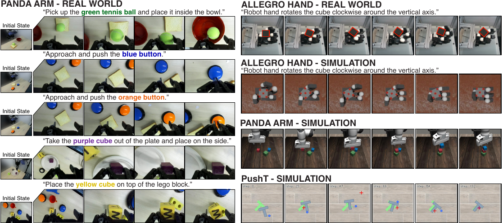
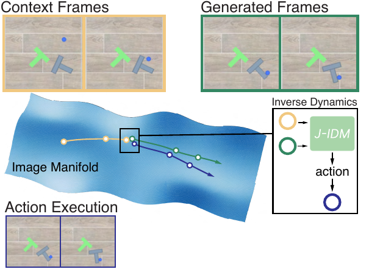
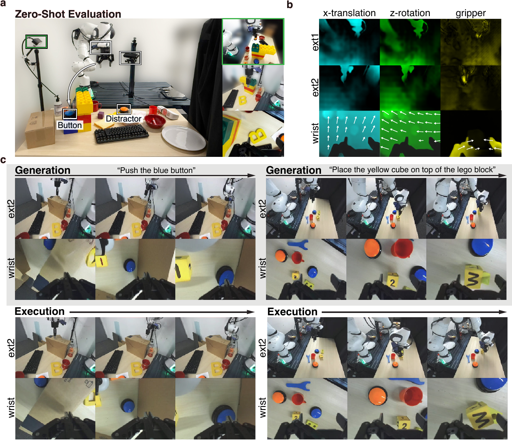
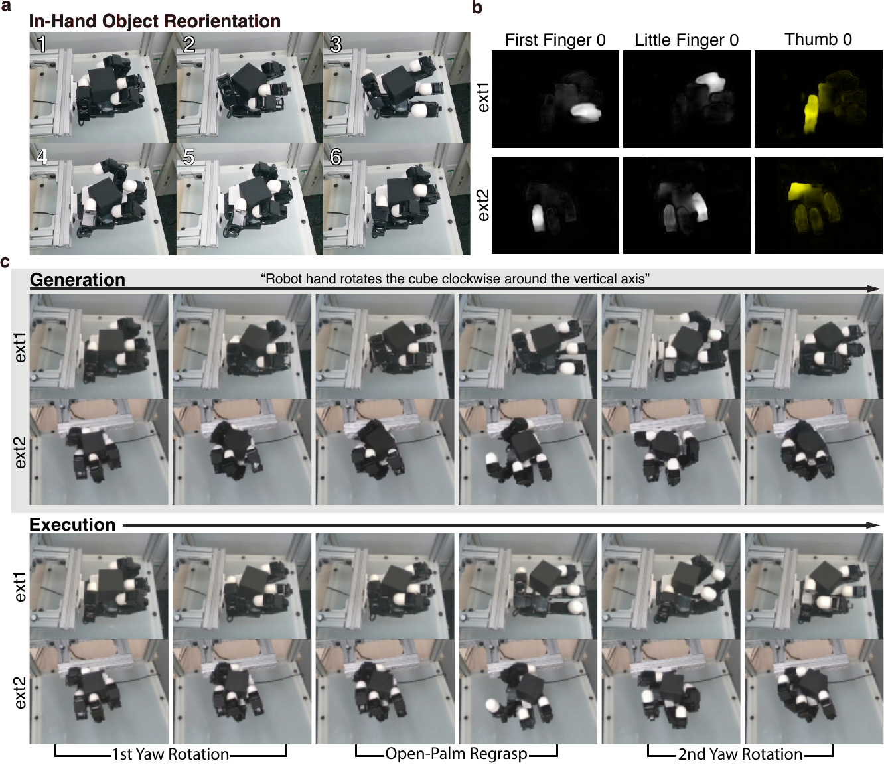
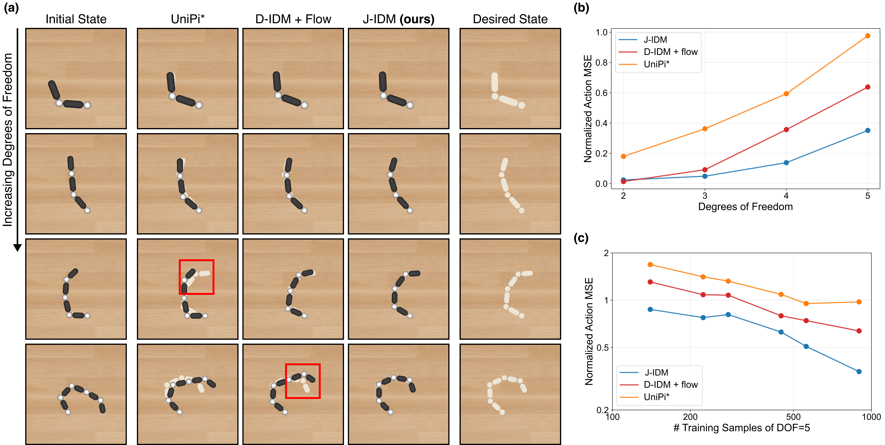

VJAM the Video–Jacobian–Action Model
Anonymous Authors · under double-blind review
We demonstrate that a 14B video generative model, paired with an inverse dynamics model carefully designed and evaluated for action-following, can be used to solve a wide variety of robotics challenges — ranging from zero-shot pick-and-place tasks on a real-world Panda arm to contact-rich re-orientation of a cube with a 16-DoF, multi-fingered robotic hand.

Video generative models have emerged as a promising robotics backbone, capable of generating videos that depict the completion of complex tasks across embodiments and environments. Many current approaches finetune video models with action-labeled data, turning them into robot foundation models that jointly predict future observations and actions.
In this paper, we study an alternative, underexplored route for transferring the capabilities of video models into robot control: leave the video planner as is, while training an embodiment-specific inverse dynamics model (IDM). This decoupling offers several advantages: the video planner can remain embodiment-agnostic; different video models can be interchanged easily without re-training the IDMs; and the inverse dynamics model can be trained with the more readily available autonomous self-play data.
With this in mind, we present a closed-loop, video-to-action policy that combines an action-free video world model with a carefully designed IDM based on the robot embodiment Jacobian. We find that such a structure yields a faithful video-to-action translator that is both data-efficient and scalable to high-dimensional action spaces. Our policy, which we coin the Video–Jacobian–Action Model (VJAM), achieves strong performance across simulated and real-world benchmarks, including zero-shot Panda arm manipulation and 16-DoF Allegro-hand dexterous cube re-orientation. The same video planner can be used across multiple embodiments by pairing it with different embodiment-specific IDMs.
Our results show that decoupled video planning plus faithful video-to-action translation is a viable alternative route towards zero-shot, cross-embodiment, and generalizable robot control.
A video model proposes a short visual plan; the Jacobian-IDM inverts each step into actions; the robot executes and the loop repeats. One primitive subsumes perception, planning, and control.

Placeholder. An HTML/CSS animation will replace this block, walking through one full closed-loop iteration: an observation history is encoded into a short generated video, the IDM reads a Jacobian field off that video, the chunk of actions is executed on the robot, and the loop repeats with fresh observations.
A single action-free video model, post-trained on a mixture of DROID and Allegro robot videos, generates plans for both a 7-DoF Panda arm and a 16-DoF Allegro hand — we then pair it with an embodiment-specific Jacobian-IDM per body. Both Panda manipulation and contact-rich in-hand reorientation are produced zero-shot.


With identical initial observations, the prompt alone steers the planner — and therefore the robot — to different objects on the table. The video model's prompt-following capability flows directly through the faithful translator into the executed action chunk.
A controlled study isolates what makes faithful translation possible: gains come from constraining actions to enter through a learned tangent map.

Faithful translation also preserves the planner's reasoning. We hide a target button behind a partial occluder — visible from only one camera view — and compare VJAM against a recent video–action baseline. VJAM produces a coherent visual plan that searches around the wall; the baseline does not.
The same six-second VJAM rollout, decomposed into what the planner imagined, what the Jacobian-IDM read from it, and what the robot did.
The path from a better video model to a better robot runs through the inverse dynamics model. We have shown that our Jacobian-IDMs, as one realization among many possible faithful IDMs — paired with an action-free video planner — enable zero-shot, multi-embodiment robot control. We hope our results motivate careful attention to the design and evaluation of future IDMs.
@inproceedings{vjam2026anonymous,
title = {Turning Video Models into Generalist Robot Policies},
author = {Anonymous},
booktitle = {Submitted to the Thirty-Eighth Annual Conference on Neural Information Processing Systems},
year = {2026},
note = {Under double-blind review.}
}